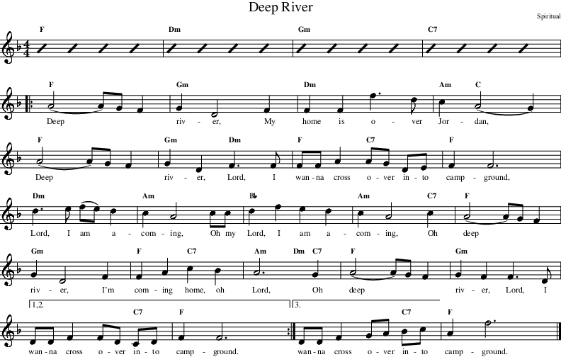

Next: Library File Creation Up: Tutorial Previous: A Simple Example
Fun time. We're going to take an old (slow) spiritual and surprise some people! We'll also learn about repeats, play with volumes, and do some interesting tempo things.
| A Public Domain Song |
|

|
Rather than list the song separately, we've inter spaced the listing with textual comments. If you want to see the listing, it is in the egs directory.
We start out with a comment block.
| // Deep River |
Start off by selecting the 4 beat metronome.
| Groove metronome2-4 |
We want to surprise our listeners a bit, so we start off with a “normal” tempo. The single “z” produces a 4 beat introduction.
|
Tempo 90
z Groove FolkArticulated |
As an introduction we play some nice, gentle chords for 4 bars.
|
1 F
2 Dm 3 Gm 4 C7 |
Surprise time. We are going to pump the tempo up to 140 BPM and select the Swing2 Groove.
|
Tempo 140
Groove Swing2 |
If we just did a switch of rhythm and tempo it'd be quite “interesting”. We need some kind of a transition. Hmmm, what if we have two beats (not four) of swing drums? We could create a 2 beat measure, but it's quite cool to give the drummer a real workout. So, here we double the time and put in a single “z” bar.
|
Tempo *2
z |
Now, we restore the tempo to the original 140.
| Tempo *.5 |
Now, just like the sheet music we insert a repeat start.
| Repeat |
Set the volume, and advise MMA that we'd like it get softer over the next 8 bars. Here we use the optional “start volume” setting in the DECRESC command. If we don't the current volume will be used, and right after a repeat that is not a good idea.
| Decresc mf mp 8 |
This is straightforward chording.
|
5 F
6 Gm 7 Dm 8 Am C 9 F 10 Gm / Dm 11 F / C7 12 F 13 Dm 14 Am |
Increase the volume over the next 4 bars, and more chording.
|
Cresc ff 4
15 Bb 16 Am / / C7 17 F 18 Gm 19 F / C7 20 Am / Dm C7 21 F 22 Gm |
This is the first/second ending. Note how we've put a “2” at the end of the next line ... this forces 2 repeats.
|
RepeatEnding 2
23 / / / C7 24 F |
For the second and third time we play this we want a more interesting accompaniment. So, we select “Swing2Plus” which adds a clarinet doing its thing.
| Groove Swing2Plus |
This ends the repeated section.
| RepeatEnd |
For our 2 bar ending we select the “Swing2End” groove. Next, we ritard our tempo over the next 2 bars.
|
Groove Swing2End
Tempo -40 2 1 / / / C7 |
The “Swing2End” groove has a neat little saxophone scale. But only on the third and fourth bars. It is a four bar sequence and the first two give the sax player time to rest. The Seq 3 forces the sequence to use the bar with the solo. We also set the solo to a louder volume.
|
Scale Volume ff
Seq 3 1 F Fermata -1 1 200 |
To finish off the example, we add a bit of time to the last note with a fermata command.
Compile this example and play it. Follow along on both the sheet music and the MMA file so you understand what's happening.
Well, that's two examples.
Certainly, the ideas here only scratch the surface of what MMA can do. We, as developers, can only hope that we've included enough commands and options for you to create wonderful music. And hope that if we haven't, that you let us know.
May we suggest that you list and examine some of the sample songs—then, it's all up to you. Have fun!